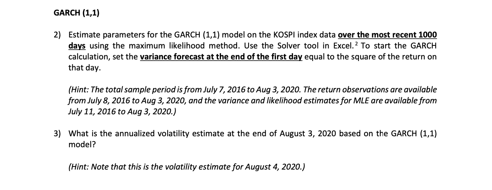
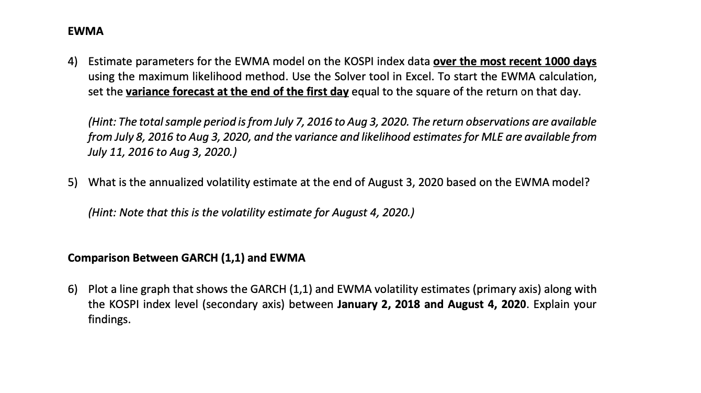
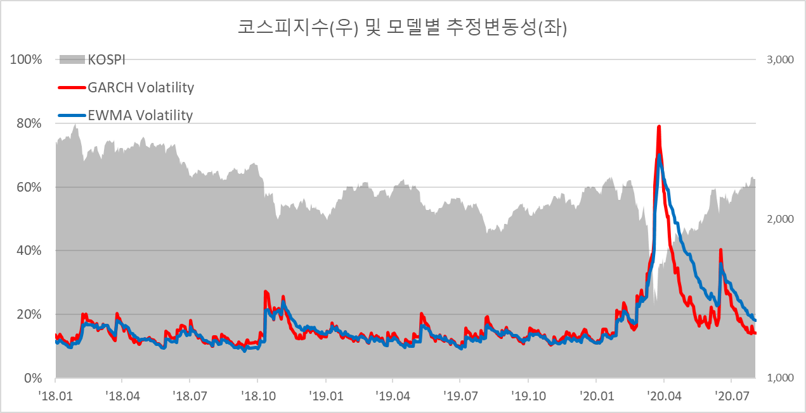
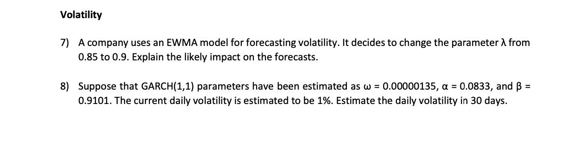
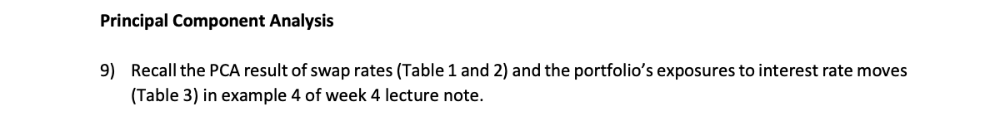
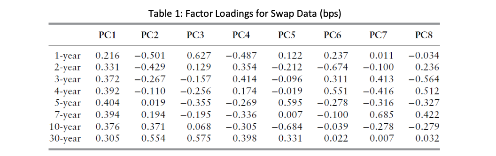
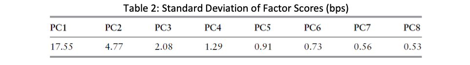
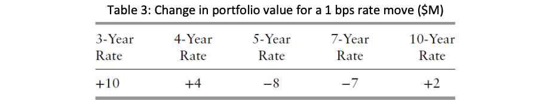
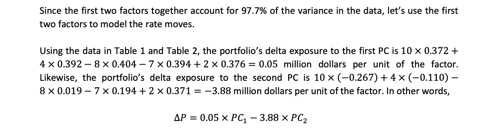
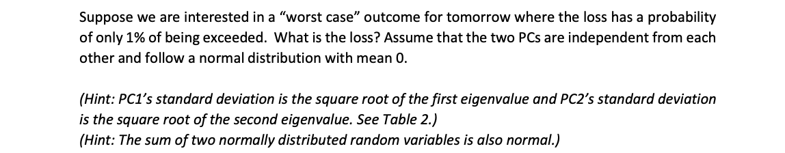

금융시장 리스크관리 과제1
Group 1 ( 김형환, 염지아, 유문선, 이희예, 홍지호 )
Question 1-3

Answer
주어진 기간의 코스피지수에 대한 GARCH(1,1) 모델의 파라미터는 아래와 같습니다.
\(\omega=0.00000363,\;\alpha=0.115,\;\beta=0.844\)
이 모델을 이용하여 추정한 2020년 8월 3일 장 종료 후 코스피지수의 연환산 변동성은 약 13.4%입니다.
위 내용의 산출과정은 아래와 같습니다.
- 주어진 코스피 지수의 일별 값(Sheet1)을 C열에 채운다. (vlookup 사용)
- 코스피 지수의 일별 산술수익률을 D열에 채운다. (\(r_i=\frac{p_i-p_{i-1}}{p_{i-1}}\))
- GARCH(1,1) 모델의 파라미터 초기값을 이용하여 당일 장 종료 시점의 추정 분산을 산출하고, E열에 채운다. (\(\sigma_i^2=\omega+\alpha r_i^2+\beta \sigma_{i-1}^2\))
- 일별 추정분산을 이용하여 일별 로그우도값(\(LH=-\ln \sigma^2_i-\frac{r_i^2}{\sigma^2}\))을 계산하여 F열에 채우고, 이를 모두 더하여 전체 우도값을 산출한다.
- 전체 우도값을 최대화시키는 파라미터를 solver 기능을 이용하여 추정한다.
- 적정 파라미터를 추정하였으면, 8/3일의 분산값을 통해 연환산 변동성을 산출한다. (\(\sigma_{annual}=\sqrt{252}\sigma_{8.3}\))
Question 4-6

Answer 4-5
주어진 기간의 코스피지수에 대한 EWMA 모델의 파라미터 \(\lambda=0.934\)입니다.
이 모델을 이용하여 추정한 2020년 8월 3일 장 종료 후 코스피지수의 연환산 변동성은 약 17.6%입니다.
위 내용의 산출 과정은 아래와 같습니다.
- 주어진 코스피 지수의 일별 값(Sheet1)을 C열에 채운다. (vlookup 사용)
- 코스피 지수의 일별 산술수익률을 D열에 채운다. (\(r_i=\frac{p_i-p_{i-1}}{p_{i-1}}\))
- EWMA 모델의 람다 초기값을 이용하여 당일 장 종료 시점의 추정 분산을 산출하고, E열에 채운다. (\(\sigma_i^2=\lambda \sigma_{i-1}^2+(1-\lambda)r_i^2\))
- 일별 추정분산을 이용하여 일별 로그우도값(\(LH=-\ln \sigma^2_i-\frac{r_i^2}{\sigma^2}\))을 계산하여 F열에 채우고, 이를 모두 더하여 전체 우도값을 산출한다.
- 전체 우도값을 최대화시키는 람다를 solver 기능을 이용하여 추정한다.
- 적정 파라미터를 추정하였으면, 8/3일의 분산값을 통해 연환산 변동성을 산출한다. (\(\sigma_{annual}=\sqrt{252}\sigma_{8.3}\))
Answer 6

2018년 ~ 2020년 8월 4일까지 코스피 지수(회식 면) 및 GARCH(적색), EWMA(청색)을 도식화하였습니다.
먼저, 전체적인 추세를 볼 때 GARCH(1,1) 모형과 EWMA 모형이 추정한 일 변동성은 크게 다르지 않습니다. 근본적으로 GARCH(1,1) 모형에서 장기변동성을 제외한 모형이 EWMA이며, GARCH(1,1)의 세 파라미터 중 장기변동성의 가중치가 가장 낮기 때문입니다.
두 번째로는, 코스피 지수(회색 면)의 하락폭이 클 때 모델의 추정변동성이 급등하는 경향이 있습니다. 이러한 경향은 2020년 3월경 코로나19 펜데믹으로 인해 주가가 매우 큰 폭으로 급락하였을 때 잘 나타납니다. 주가는 상승할 때는 완만히 상승하다가 하락할 때는 급락하는 경향이 있는데, 두 모델이 이러한 특성을 잘 반영하여 하락시 변동성이 급등하는 현상을 잘 표현하는 것으로 보입니다.
모델의 식을 생각해보면, 우리가 사용한 모델에서 GARCH(1,1)은 약 11.5%(\(\alpha\)), EWMA는 약 6.6%(\(1-\lambda\))만큼 당일 수익률의 제곱을 추정변동성에 반영하고 있습니다. 따라서, 주가가 오늘 급등락하였다면 해당 비율만큼 추정변동성에 영향을 주게되고, 그 급등락이 클수록 추정변동성이 급등하게 되는 것 입니다.
한편, 두 모델의 차이는 이러한 변동성 급등 및 평균회귀(mean reverting) 과정에서 잘 나타납니다. 먼저, 급등시에는 당일 주가수익률의 반영비율이 큰 GARCH(1,1) 모형의 추정변동성이 더 급등하는 패턴을 관측할 수 있습니다.(적색>청색)
다음으로, 변동성이 급등하고나서 시간이 지남에 따라 반영비율이 희석되면서 변동성이 평균 수준으로 회귀하게 되는데, 이때에도 당일 주가수익률의 반영비율이 큰, 직전 추정변동성의 반영비율이 상대적으로 낮은 GARCH(1,1) 모형의 회귀 속도가 빠르게 됩니다. 이러한 패턴은 20년 3월 변동성 급등 이후 20년 6월경까지 변동성이 하락할 때 잘 관측됩니다.
추가적으로, GARCH(1,1) 모형은 그 반영비율이 낮기는 하지만 장기변동성을 포함하여 변동성을 추정하기 때문에, 역시 EWMA보다 평균회귀가 빠른 이점을 가지게 됩니다. 따라서, 일시적인 주가 급등락으로 변동성이 급등하는 경우에는 GARCH(1,1) 모형이 정상수준으로 잘 회귀한다는 점에서 EWMA보다 적합한 모형인 것으로 보입니다.
Question 7-8

Answer 7
EWMA의 \(\lambda\)가 증가한다는 의미는, 변동성을 추정할 때 최신 데이터의 반영비율을 늘린다는 의미입니다.
EWMA는 \(\sigma_i^2=\sum_k \lambda r_{i-k}^2\)의 방식으로 변동성을 추정하는데, 여기에서 람다값이 증가하면 가장 최근에 형성된 수익률이 보다 많이 반영되게 됩니다.
따라서, 최근 주가흐름이 추정변동성에 미치는 영향이 커지게 되므로, 급등락장이 이어졌다면 추정 변동성이 보다 빠르게 급등할 것이고, 보합장이 이어졌다면 추정변동성이 빠르게 감소할 것으로 보입니다.
Answer 8
주어진 파라미터와 현재 일 변동성이 1%임을 활용하여 30일 변동성을 산출하겠습니다.
이 때 이용하는 수식은 \(E[\sigma^2_{n+30}|I_{n-1}]=V_L+(\alpha+\beta)^{30}(\sigma^2_n-V_L)\) 입니다.
먼저, 장기변동성 \(V_L=\frac{\omega}{1-\alpha-\beta}=0.0002045\)입니다.
이에 따라 현재까지의 정보를 이용하여 30일 뒤의 일변동성을 추정하면 약 1.09%가 됩니다.
\[E[\sigma^2_{n+30}|I_{n-1}]=0.0002045+0.9934^{30}(0.01^2-0.0002045)=0.0001188\]
\[E[\sigma_{n+30}|I_{n-1}]=\sqrt{E[\sigma^2_{n+30}|I_{n-1}]}=\sqrt{0.0001188}=1.09\%\]
Question 9






Answer
먼저, 목표는 1% 이하의 확률로 발생할 수 있는 포트폴리오의 손실액을 찾는 것입니다. 이는 포트폴리오의 확률분포를 통해 알 수 있으며, CDF에서 하위 1% 임계값을 통해 계산할 수 있습니다. 이 의미는, 향후 시장상황에 따라 약 1%의 확률로 해당 임계값보다 큰 손실이 발생할 수 있다는 뜻이며, 이를 VaR(Value at Risk)라고 부릅니다.
이제 문제에서 주어진 정보를 이용하여 이 임계값을 계산해보겠습니다.
문제에서 \(PC_1,PC_2\)는 각각 평균이 0인 정규분포를 따르므로, 각각의 표준편차를 \(\sigma_1,\sigma_2\)라고 하겠습니다.
이에 따라 포트폴리오의 가격변동 \(\Delta P=0.05PC_1-3.88PC_2\)는 두 정규분포의 선형결합이므로 joint normal distribution이 되고, 각 \(PC\)는 평균이 0, 독립임을 이용하여 \(\Delta P\)의 평균과 표준편차 \(\sigma\)는 아래와 같이 계산할 수 있습니다.
\(1.\;E[\Delta P]=0.05E[PC_1]-3.88E[PC_2]=0\)
\(2.\;\sigma^2=E[\Delta P^2]-(E[\Delta P])^2=0.05^2\sigma_1^2+3.88^2\sigma_2^2\)
즉, \(\Delta P\sim N(0,\;0.05^2\sigma_1^2+3.88^2\sigma_2^2)\)이므로 각 \(PC\)의 표준편차를 알면 1% 임계값을 알 수 있습니다. Table2에 따라 \(\sigma_1=17.55,\;\sigma_2=4.77\)이므로 이를 이용하면,
\(\sigma^2=0.05^2\sigma_1^2+3.88^2\sigma_2^2=343.30,\;\;\therefore\sigma=18.53\)
\(z_{0.01}=-2.33\)임이 잘 알려져 있으므로, 1% 임계값은 \(-2.33\sigma\approx -43.17\)입니다.
따라서, 약 1% 확률로 발생할 수 있는 포트폴리오의 예상손실액은 최소 43.17 million $ 입니다.